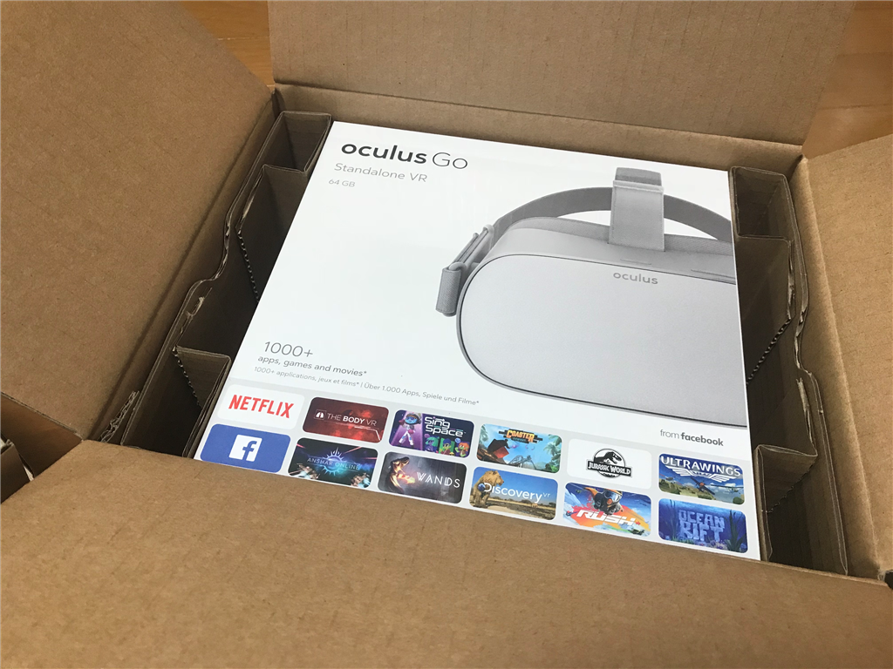
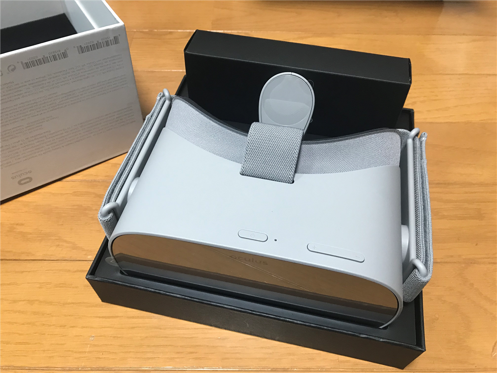
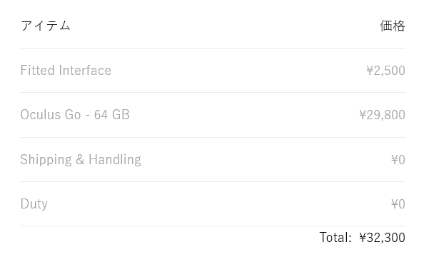
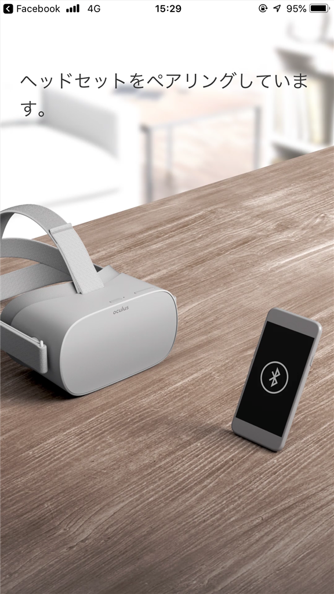
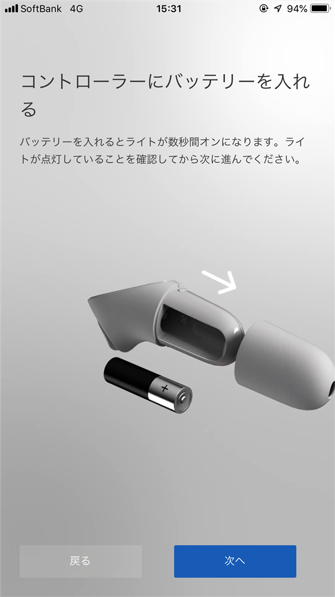
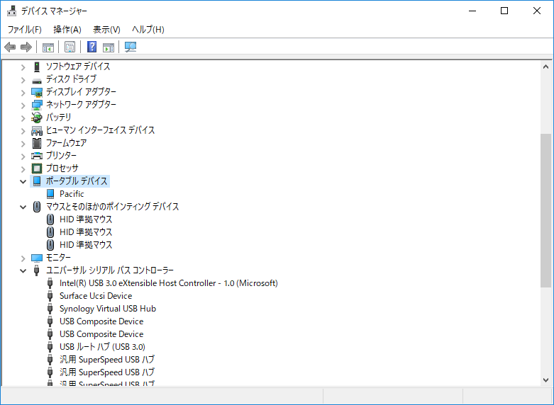
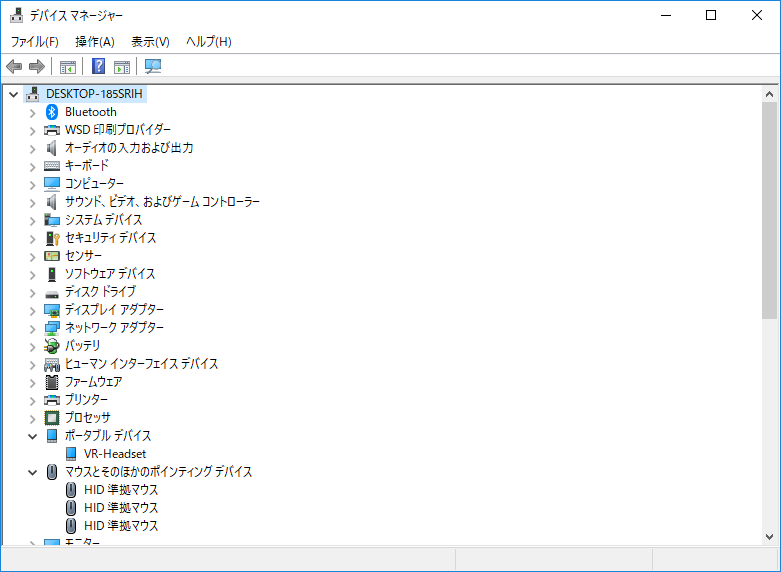

10月24日：Oculus Go を買った
公開日：

プロ生熊本の懇親会（10月20日の夜）で Oculus Go を衝動買いした。翌21日に発注が通り、香港から発送。24日には関空経由で愛媛・松山へ着弾。ほんと、最近の物流はスゴいな。Amazon も注文して翌日到着するようになったし。
熊本の世界の山ちゃんで、Oculus Goを注文して満足顔のだるやなぎ。 pic.twitter.com/0V75qbr2UY
— Ｙｏｕ＆Ｉ (@you_and_i) 2018年10月20日
VR ヘッドセットはすでに Windows Mixed Reality を所持してるのだけど、あんまり使い道がなく持て余していたわけで……自分はあんまりそっち方面に興味がないのかもしれないが、それほど高くないものだし、やっぱり一度体験しておこうという気になった。

購入したのは 64MB モデル。もろもろあわせて 32,300 円だった。

みんなの勧めに従い、平らな顔族向けに用意されているクッションだかアダプターみたいなのも一緒に買ったが、自分はそれをつけても鼻の下から外光が入ってくる。よっぽど鼻が低いらしく少し悲しかったけれど、標準のよりはフィットするようだ。
Oculus Go というのは、自分もよく知らないのだが、中身はただの Android らしい。スマホにゴーグルをくっつけた感じなのだな。小さいコントローラーが一つ付属していて、それでプチプチと操作する。目線というか、顔の向きにも追従するようだ。加速度センサー的な謎技術でなぞなぞして実現しているのだろう（文系人間だからわかんないぜ！）。セットアップは簡単で、スマホアプリでガチャガチャやるだけですんなり完了した。
 
んで、さっそく Netflix を見てみたのだが――解像度の低さはちょっと気になるけど、割かし塩梅がよい。アプリは FireTV などに載っているもの相当で、ちょっと使いにくいけど、ソファにどっかり腰を下ろすとミニシアターを独り占めしてるみたいで気分がよい。
Oculus Go で会議した pic.twitter.com/qiThyy4gI0
— だるやなぎ准将 (@daruyanagi) 2018年10月25日
そのあとは数人で集まり、Oculus Room や Bigscreen でしゃべって遊んだ。ただ駄弁ってるだけだけど、これが結構面白く（@jz5 のヘッドセットが熱暴走してワロた）、Windows MR になかったのはこれだな―などと思った（いや、自分があんまり使いこなしてないだけなんだが）。
思ったこと・気づいたこと
- ヘッドセットを外さないとリアルがみえないので、ビールやおつまみに手を伸ばすのが面倒。カメラがあれば Win MR みたいな「リアルをうつす仮想懐中電灯」ってのもできるんだろうけど、いかんせん、Oculus Go にはカメラがない。まぁ、そこは割り切ってるんだろうけど
- コントローラーの場所は VR 内に表示されるので、缶やお皿になにかビーコンを貼って、コントローラーみたいに表示できれば面白いかも
- ティッシュやおちんちんも表示されれば、オナニストの人には便利だろうなぁ、と思った
- 缶ビールを飲むとき、缶がヘッドセットにつかえる。ストローが必要！
- Oculus Go は眼鏡をかけていても使えるけど、やっぱ面倒なので対策を考える
- 結構熱くなる。熱対策が必要かもしれない
- 親父（あ、そうそう、この前松山を旅だったはずなんだが、仕事が延期とかで戻ってきた）が気色悪がるから、ヘッドホンがほしいな……家に有線のヘッドホンがない。Bluetooth でもいけるんか？
- バッテリーがめっちゃ減るので、モバイルバッテリーをつないで遊んでた
- スクショの Facebook 共有がなぜか動かないんだが……誰か解決策教えて
- 最初、Oculus Go を PC へ接続しても内蔵ストレージへアクセスできなかったんだが、「Pacific」という名前で誤認識されている場合は、一度「デバイス マネージャー」から削除して再インストールするといい


「VRHeadset」と認識されれば、「エクスプローラー」から内蔵ストレージへアクセスできるようになる。
最後に――
- ケーブルレスで使えるのは大変お気軽でよい！！
Windows MR 使わないのも、線つないで準備するのが面倒だからなんだよなー……やっぱスタンドアロンで動く方がいいよ。スタンドアロンでもヘビーなコンテンツを扱えるようになれば、ブレイクスルーあるかもって感じた。
![Oculus Go オキュラス 単体型VRヘッドセット スマホPC不要 2560x1440 Snapdragon 821 (32GB) [並行輸入品]](https://images-fe.ssl-images-amazon.com/images/I/31%2BOtbh-MYL._SL160_.jpg "Oculus Go オキュラス 単体型VRヘッドセット スマホPC不要 2560x1440 Snapdragon 821 (32GB) [並行輸入品]")
Oculus Go オキュラス 単体型VRヘッドセット スマホPC不要 2560x1440 Snapdragon 821 (32GB) [並行輸入品]
- 出版社/メーカー: Oculus
- メディア: エレクトロニクス
- この商品を含むブログを見る
（※公式サイトから買う方が安いらしい）